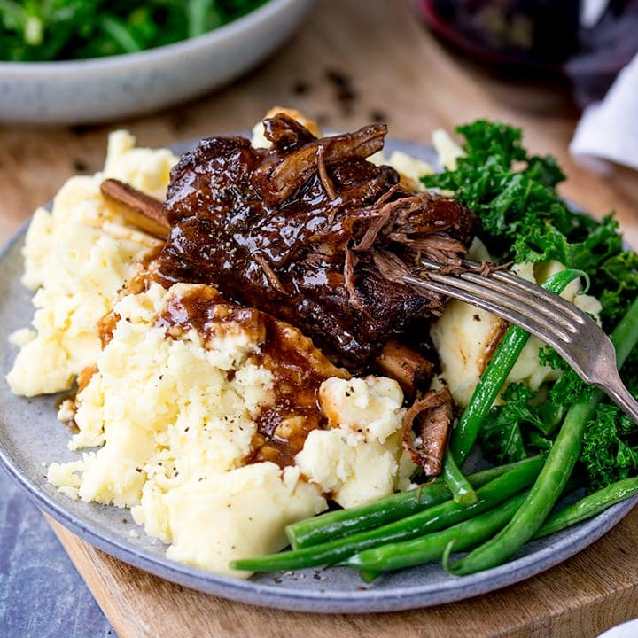
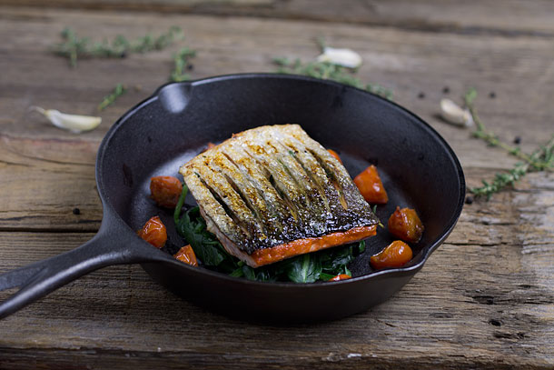

|
Beef Wellington 
Beef Wellington is a steak dish of English origin, made out of fillet steak coated with pate and duxelles, wrapped in puff pastry, then baked. Some recipes include wrapping the coated meat in a crepe or parma ham to retain the moisture and prevent it from making the pastry soggy |
Braised Short Rib Braising is a combination of dry and moist cooking methods where you sear the meat and then bake the meat in a liquid. It sounds intimidating, but it's actually a very straightforward cooking method and yields delicious results that taste gourmet. |
|
Jidori Chicken Scallopini Chicken scallopini can be cooked in a variety of sauces and flavors. We departed from the piccata herd and went instead for tender mushrooms and a hint of wine, lemon, and broth, capped off with a dash of rich cream: scaloppine ai funghi. Cheers to a perfectly light yet hearty weeknight meal. |
Crispy Skin Salmon perfectly cooked salmon that’s juicy inside can be served plain because it’s an oily fish with plenty of flavour in the flesh. With the crispy skin as an extra element, it really doesn’t need anything else except perhaps a wedge of lemon! |